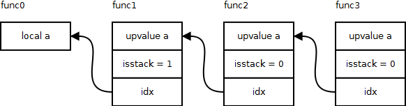
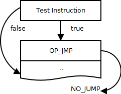
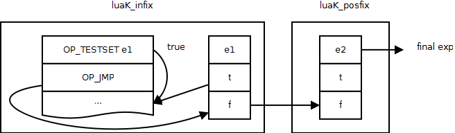
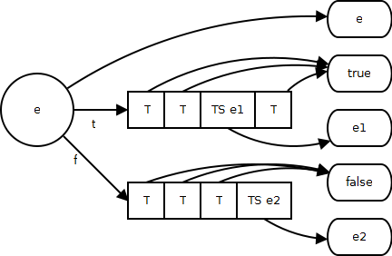

常量表达式
常量表达式在Lua用来表示”nil”，“true”，“false”，字符串和数字的值。在BNF中常量表达式属于终结符，也就是语法解析的最底端，在simpleexp函数中被解析出来，并创建对应类型的expdesc对象。VNIL，VTRUE和VFALSE这三个类型本身就对应3个固定的值，没有什么额外的数据。VKNUM类型代表数字常量，需要在nval中存放从词法分析中得到的lua_Number。VK类型用来表示一个通常意义上的常量表达式，使用info来存储他所代表的常量值在常量表中的id。字符串常量就被直接创建成VK类型，然后将其对应的字符串值保存到常量表中，并将id保存到info中。
由于常量表达式的值是一个常量，所以本身不需要生成任何用于估值计算的指令，完全为高层语义的指令生成提供服务。当高层语义要将常量装入一个寄存器时，比如local a＝”foo”，会调用discharge2reg函数，生成OP_LOADK指令。Lua中的很多指令都可以直接使用常量作为操作数，比如算数指令。当高层语义要将常量当作其他指令的参数时，会调用luaK_exp2RK函数，返回这个常量对应的id。
其实Lua本身使用VK一种类型就可以表示所有的常量表达式，而其他类型常量表达式完全是为了优化才使用的。VNIL和VTRUE，VFALSE类型分别都有对应OP_LOADNIL和OP_LOADBOOL指令将常量值装入寄存器，所以不需要将其放到常量表中。我们在《虚拟机指令》中讲过这些指令的特殊用法。而VNUM的作用是支持算数运算的常量优化(constfolding)，如果被优化掉了，也就不需要在常量表中出现。VNUM会在discharge2reg的时候，也就是真正需要使用其常量值得时候，才被放到常量表中。当VNIL，VTRUE，VFALSE和VNUM需要被用在其他指令的参数时，luaK_exp2RK将其全部转化为VM类型，并在常量表中创建对应的常量值。VNIL，VTRUE和VFALSE还会在逻辑表达式中被用于优化。
变量表达式
VLOCAL代表局部变量表达式，在info中保存局部变量对应的寄存器id。
VUPVAL代表upvalue变量表达式，在info中保存upvalue的id。
VINDEXED代表对一个表进行索引的变量表达式，比如a.b或者a[1]，使用ind结构体保存数据。idx保存用来索引的key的id，他可能是一个寄存器id或者常量id；t保存被索引表的id，他可能是一个寄存器id或者upvalue id；vt表示t的类型是寄存器id(VLOCAL)还是upvalue id(VUPVAL)。
singlevar函数用来解析一个变量表达式。singlevar调用函数singlevaraux，来查找变量名对应的表达式类型。singlevaraux首先在当前FuncState的局部变量中查找。如果找到，就创建一个VLOCAL表达式。否则，就递归向上查找外围函数的upvalue，并最终返回一个VUPVAL表达式。这个查找的过程也是创建upvalue的过程。当在外围函数中找到对应变量名的局部变量后，会在这个外围函数的所有内嵌函数中创建对应的upvalue。如下图所示：

函数func(N)内嵌于func(N-1)。当func3使用了变量a，并在func0中找到了局部变量a时，会在func1~3中创建a对应的upvalue。func1中的upvalue是对上一级中的局部变量的直接引用，所以isstack为1，idx代表局部变量的寄存器id。其他的都是对上一级upvalue的引用，所以isstack为0，idx代表上一级upvalue的id。
如果singlevaraux最终没有能找到符合变量名的局部变量或者upvalue，singlevar函数就将这个变量名当作全局变量进行处理。首先singlevar会再次调用singlevaraux，查找名称为“_ENV”的upvalue。这个upvalue已经在最外层的mainfunc中创建了，所以一定能找到。然后将_ENV对应的upvalue变量表达式当作table，用变量名当作key，通过luaK_indexed函数创建一个VINDEXED表达式。这个操作等于将varname转化为_ENV.varname进行访问。
变量表达式的估值计算是从变量中获取值。luaK_dischargevars函数为变量表达式生成估值计算的指令。对于VLOCAL类型，值就存在于局部变量对应的寄存器中，不需要生成任何获取指令，也不需要分配寄存器来存储临时值。VLOCAL被转化为VNONRELOC类型，代表已经为这个表达式生成了指令，并且也分配了寄存器保存这个值。对于VUPVAL类型，需要产生指令OP_GETUPVAL来获取其值。而对于VINDEXED类型，根据vt的不同，需要产生OP_GETTABLE或者OP_GETTABUP指令来获取其值。VUPVAL和VINDEXED都被转化为VRELOCABLE类型，表示获取指令已经生成，但是指令的目标寄存器(A)还没有确定，等待回填。回填后，VRELOCABLE类型会转化成VNONRELOC类型。
变量表达式除了用来获取变量值，还有另外一个用途，就是在赋值语句中当作赋值的目标，也就是将其他表达式的值存储到这个变量表达式中。这个工作是由luaK_storevar函数完成的。luaK_storevar根据被赋值的变量表达式的不同类型，生成不同的赋值指令。对于VLOCAL，不需要额外的指令，只需要将赋值表达式的目标寄存器回填成局部变量对应的寄存器就可以了。对于VUPVAL，需要生成OP_SETUPVAL指令。而对于VINDEXED，则需要生成OP_SETTABLE或者OP_SETTABUP指令。
多返回值表达式
VCALL表达式对应着一个函数调用的OP_CALL指令。VVARARG表达式对应”…”，也就是OP_VARARG指令。他们都可以有多个返回值。在需要单值的上下文中，通过调用luaK_setoneret函数，将表达式设置成单返回值。VCALL的返回值位置是固定的，就是用来存放被调用closure的寄存器，所以被转化为VNONRELOC类型。VVARARG的目标寄存器待定，被转化为VRELOCABLE类型。在需要多个返回值的上下文中，通过调用luaK_setreturns函数，回填指令中的返回值数量。
算数表达式
所有关于操作符的解析都在subexpr函数中进行，这里处理一元和二元操作符以及优先级关系。对于一元操作符，会调用luaK_prefix生成代码。对于二元操作符，会首先调用luaK_infix处理第一个前面的表达式，然后分析出后面的表达式，再调用luaK_posfix对这两个表达式进行处理。
算术表达式最终是在codearith函数中创建的。首先，codearith会调用constfolding函数，尝试优化。如果两个被操作表达式都是数字常量，就直接计算出结果赋给第一个常量表达式。如果不能被优化，codearith函数直接为算术表达式生成对应的算数指令，并且将表达式类型设置成VRELOCABLE，等待回填生成指令的目标寄存器。
关系表达式
关系表达式(>,>=,<,<=,==,~=)在遵循传统意义上应该对两个待比较的表达式的关系进行评估，然后将评估结果的boolean值作为表达式的估值，提供给高层使用。而Lua并没有这样处理，而是将传统的语义转化成一个条件分支，直接代表着“这个表达式为true或false时应该做些什么”。这样的转换完全是为了执行效率。在实际使用中，关系表达式大多数被用在条件跳转判断中，而不是赋值。这样实现可以直接连接后面的分支，省了很多不必要的步骤。
关系表达式在codecomp函数中创建。首先，将需要比较的两个子表达式取出目标寄存器或者常量id。然后通过调用condjump函数，为表达式生成指令，并将表达式设置成VJMP类型。condjump函数会生成一个测试指令和一个跳转指令OP_JMP。测试指令包括OP_EQ，OP_LT，OP_LE。这些测试指令会比较两个表达式的值。如果满足测试条件，就继续执行；否则，就跳过下一条指令执行。测试指令与后面的OP_JMP指令配合到一起，就形成了一个条件跳转。这样的表示方法也是Lua中条件跳转的唯一表示方法。条件跳转形成了两个执行分支：
- 当测试条件满足，就跳转到一个现在还未知的位置，也就是true分支。
- 当测试条件不满足，就继续运行OP_JMP后面的指令，也就是false分支。

这个OP_JMP指令的位置会被保存到表达式的info中，等待后继的回填处理。
逻辑表达式
逻辑表达式(and,or)的处理是最复杂的。表达式e1 and e2的语义是：如果e1为true，整个表达式的值为e2；否则整个表达式的值为e1。表达式e1 or e2的语义与and相反：如果e1为true，整个表达式的值为e1；否则整个表达式的值为e2。所以，逻辑表达式其实是两个待评估表达式的二选一。
首先要先说明一下expdesc结构体中的t和f变量。这两个变量实际上是两个OP_JMP指令的链表(关于跳转链表，在这里已经讲过)，我们称之为patch list。由于关系表达式和逻辑表达式的特殊处理方式，这两个patch list代表本表达式被评估为true或者false时的跳出指令列表。通过将一个地址回填给patch list，就将对这个表达式的评估直接引导到对应的执行分支。任何类型的表达式都可能带有patch list。如果有patch list，说明这个表达式本身或者子表达式使用了关系或者逻辑表达式。
patch list中的元素是在luaK_goiftrue和luaK_goiffalse函数中被添加到patch list中的。luaK_goiftrue函数调用jumponcond生成一个OP_TESTSET和一个OP_JMP指令。与关系表达式的处理类似，这两个指令形成了两个执行分支：向下执行的true分支和跳出的false分支。这个跳出的OP_JMP指令会被连接到表达式的f中，代表表达式为false时执行的跳出，并等待回填。如果表达式有t存在，调用luaK_patchtohere，将所有true跳出回填到下面继续执行的代码。这代表了除了本表达式评估为true会继续执行外，所有该表达式被评估为true的跳出也应该跳转到此处继续执行。如果表达式是一个关系表达式，也就是VJMP类型，其本身就是一个逻辑跳转，直接将其info中指向的OP_JMP指令连接到f中，而不需要为其生成OP_TESTSET指令了。luaK_goiffalse与luaK_goifture相反，当表达式为true时跳出。
对于关系表达式e1 and e2，首先在luaK_infix中为e1调用luaK_goiftrue，生成对e1的测试跳转指令，这就代表如果e1为true，继续执行；否则跳出。此时e1中的f中已经包含了e1的false跳出。然后解析e2，并在luaK_posfix中，将e1的f串接到e2的f上，并将e2作为作为整个表达式解析返回给高层的表达式。

对于or的处理，与and类似，这里不再累述。
OP_TESTSET与其他测试指令类似，唯一的特殊点在于OP_TESTSET在执行跳转时会将被评估的表达式的值赋给一个未知的寄存器。这个操作时专门针对逻辑表达式的语义设计的。如果将逻辑表达式e1 and e2的值赋值给一个变量，那么这个变量的值并不是true或者false，而是e1或者e2。所以，在跳转时，说明此跳转已经取了e1的值，要先做一个对未知寄存器的赋值，然后等待回填这个寄存器。
表达式的用途
根据上面描述，表达式在Lua中本质上有两种用途。
首先是被当作跳转条件使用。在if，while等结构中，都需要一个表达式来代表跳转条件。在当作条状条件处理时，Lua会使用上面讲过的luaK_goiftrue或者luaK_goiffalse，来评估一个表达式。此时表达式本身的值已经没有意义，只需要将t或者f回填成分支起始指令未知就搞定了。如果t或f中有OP_TESTSET指令，会被替换成OP_TEST指令。
其次是将表达式的值保存到寄存器中，比如给变量赋值。由于上面关系和逻辑表达式的特殊处理，表达式的值已经不仅仅是对本身的估值，还要考虑到patch list所对应的值。我们可以将patch list中的条件跳转分为两种。使用OP_TESTSET作为条件指令的，也就是关系表达式产生的条件跳转，我们称之为赋值条件跳转TS。上面讲过，如果走到这个分支，表达式的最终值就是OP_TESTSET所设置的值。其他所有不使用OP_TESTSET的测试指令，也就是关系表达式所产生的跳转，我们称之为非赋值条件跳转T。分条件跳转最后应该产生true或者false值。

所以，表达式的值最终会由很多的分支导致很多的值。将表达式的值赋值给寄存器的操作，在exp2reg函数中完成。要将这些值赋给一个寄存器，首先调用discharge2reg，将自己的值存入指定寄存器，然后处理patch list。对于非赋值条件跳转，我们需要为true和false值各补上一个OP_LOADBOOL指令作为赋值操作，并将t中的所有T回填到true，将f中所有的T回填到false。而对于赋值条件跳转，不仅要将跳转回填到赋值的最后，并且需要回填所有OP_TESTSET指令的目标寄存器，也就是将这些值赋值给指定寄存器。patchlistaux (FuncState *fs, int list, int vtarget, int reg, int dtarget)函数就是回填patch list用的。此函数会遍历patchlist上的每个条件跳转，如果是OP_TESTSET，就回填寄存器reg，并回填跳转地址vtarget，否则，回填跳转地址dtarget。